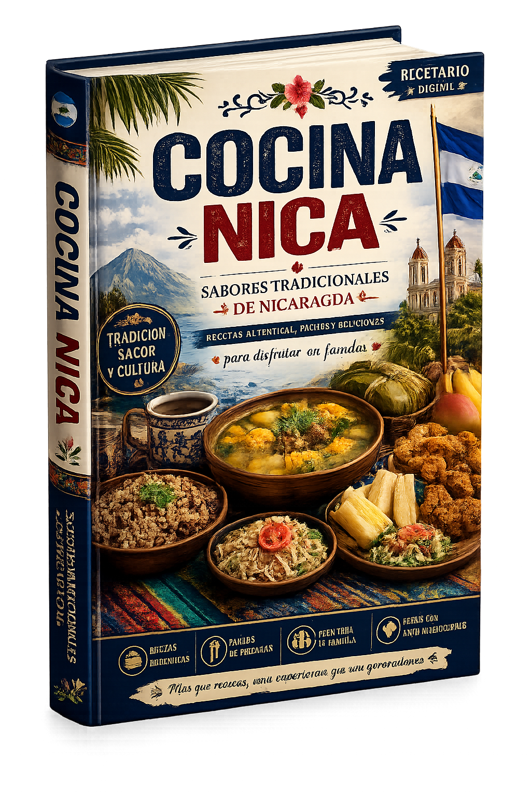
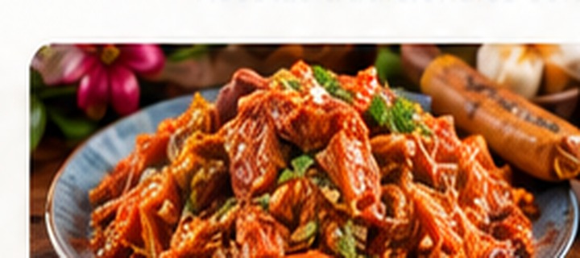
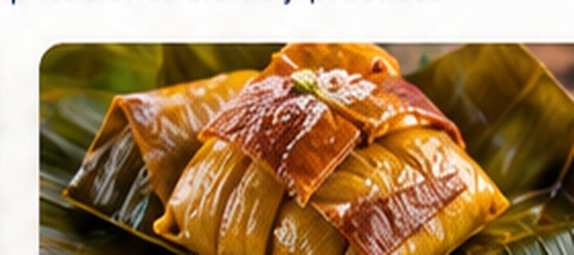
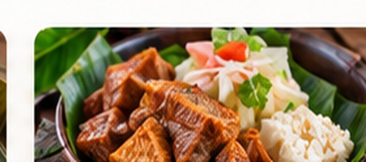
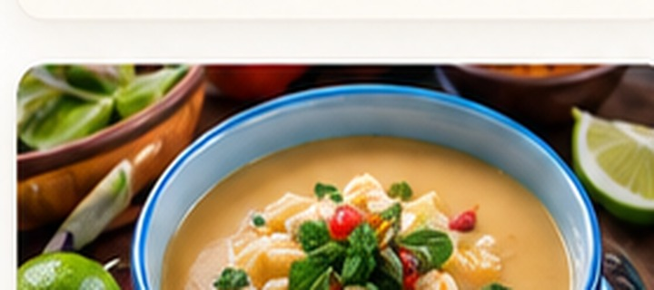
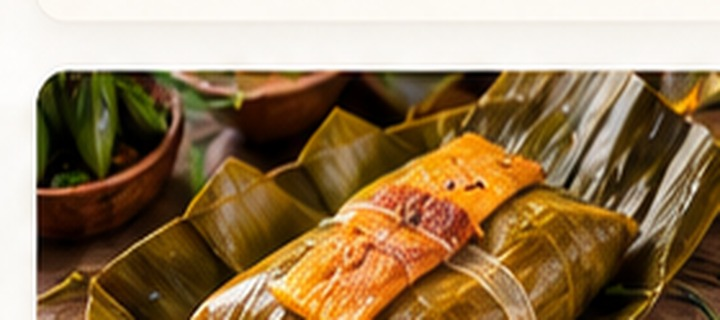
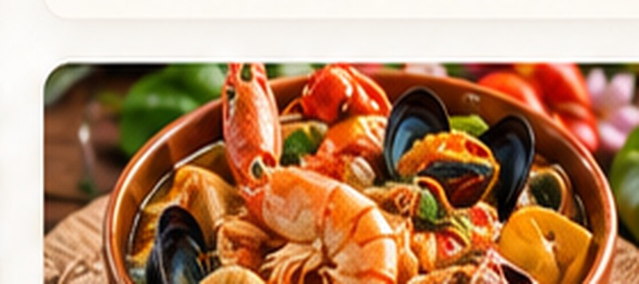
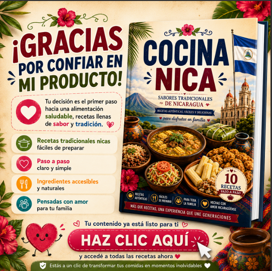

Gallo Pinto
El plato más icónico de Nicaragua.
Lleva a tu cocina los sabores que nos conectan con Nicaragua.
Un recetario digital creado para disfrutar platos tradicionales nicaragüenses con explicaciones claras y prácticas, desde casa.

La cocina nicaragüense guarda recuerdos, celebraciones y costumbres que pasan de generación en generación. Este libro reúne parte de esa riqueza en un formato digital pensado para consultar, cocinar y compartir.
Recetas inspiradas en preparaciones tradicionales de nuestra tierra.
Contenido organizado para que puedas seguir cada preparación con mayor facilidad.
Ideal para cocinar en familia y conservar nuestras tradiciones.
Una selección visual de platos tradicionales incluidos en el recetario.
El plato más icónico de Nicaragua.

Una preparación tradicional con historia y sabor.

Un sabor único de nuestra tierra.

La combinación de yuca, chicharrón y ensalada de repollo.

Cremosa, reconfortante y deliciosa.

Tradición en cada bocado.

El sabor del mar en nuestra mesa.
Un plato tradicional para toda ocasión.

Al comprar Cocina Nicaragüense 2.0, también recibirás el bono promocional preparado para acompañar este recetario.
El bono mostrado corresponde al producto Cocina Nica y forma parte de la oferta de compra.
🎁 Comprar y recibir mi bono — US$ 12.00Descubre recetas tradicionales en un libro que puedes consultar desde computadora, tablet o teléfono.
Recibe el recetario digital y empieza a disfrutar los sabores de Nicaragua.
Sí. Es un producto digital que se entrega mediante Payhip después de completar la compra.
Sí. Puedes acceder al archivo digital desde dispositivos compatibles con el formato entregado por Payhip.
Presiona cualquiera de los botones de compra y serás dirigido al checkout de Payhip, donde verás las opciones de pago disponibles para tu compra.
Sí. Desde el encabezado puedes regresar a la página principal de Flores Universo y conocer los otros libros.
Conservemos nuestras raíces a través de los sabores que compartimos.